Note
Go to the end to download the full example code.
Strain Mapping of a ZrNb Precipitate#
Strain mapping in 4D-STEM measures local lattice distortions by tracking how diffraction spot positions shift relative to an unstrained reference. Where orientation mapping asks “which grain orientation is here?”, strain mapping asks “how is the lattice stretched or sheared here?”.
Physical Background#
In a crystalline material under strain the lattice planes are no longer at their equilibrium spacing. This shifts the Bragg spots in the diffraction pattern away from their ideal positions. The displacement of spot g by Δg is related to the distortion of the real-space lattice by the displacement gradient tensor F:
g_measured = F · g_reference
Decomposing F into its symmetric and antisymmetric parts gives:
ε (symmetric part): the strain tensor — normal strains εxx, εyy (elongation along x and y) and shear strain εxy.
ω (antisymmetric part): the rotation tensor — rigid-body rotation of the lattice, not a physical strain.
In practice, we: 1. Detect diffraction disk positions at every scan pixel using template matching. 2. Select a reference region (unstrained matrix far from the feature of interest). 3. Compute F at each pixel by comparing the measured spot positions to the
reference positions.
This tutorial uses a real 4D-STEM dataset of a ZrNb alloy containing a second-phase precipitate. The precipitate has a slightly different lattice parameter from the matrix, producing a localised strain field at the interface.
Dataset: https://zenodo.org/records/11284654
import numpy as np
import matplotlib.pyplot as plt
import hyperspy.api as hs
import pyxem as pxm
Loading the Data#
zrnb_precipitate is a 60 × 40 scan with 256 × 256 diffraction patterns
recorded at 200 kV. The calibration is 0.051 nm⁻¹ per pixel.
The precipitate appears as a darker region in virtual bright-field images.
s = pxm.data.zrnb_precipitate(allow_download=True)
print(s)
print(s.axes_manager)
0%| | 0.00/394M [00:00<?, ?B/s]
0%| | 12.3k/394M [00:00<59:07, 111kB/s]
0%| | 77.8k/394M [00:00<23:56, 274kB/s]
0%| | 217k/394M [00:00<13:06, 501kB/s]
0%| | 401k/394M [00:00<09:31, 689kB/s]
0%| | 614k/394M [00:00<07:47, 842kB/s]
0%| | 811k/394M [00:01<07:16, 901kB/s]
0%| | 1.06M/394M [00:01<06:23, 1.02MB/s]
0%| | 1.25M/394M [00:01<06:24, 1.02MB/s]
0%|▏ | 1.42M/394M [00:01<06:48, 962kB/s]
0%|▏ | 1.63M/394M [00:01<06:30, 1.00MB/s]
0%|▏ | 1.86M/394M [00:02<06:11, 1.06MB/s]
1%|▏ | 2.09M/394M [00:02<05:57, 1.10MB/s]
1%|▏ | 2.31M/394M [00:02<05:50, 1.12MB/s]
1%|▏ | 2.53M/394M [00:02<05:52, 1.11MB/s]
1%|▎ | 2.71M/394M [00:02<06:10, 1.06MB/s]
1%|▎ | 2.90M/394M [00:03<06:14, 1.05MB/s]
1%|▎ | 3.15M/394M [00:03<05:51, 1.11MB/s]
1%|▎ | 3.38M/394M [00:03<05:44, 1.13MB/s]
1%|▎ | 3.56M/394M [00:03<06:03, 1.07MB/s]
1%|▎ | 3.84M/394M [00:03<05:29, 1.18MB/s]
1%|▍ | 4.12M/394M [00:03<05:09, 1.26MB/s]
1%|▍ | 4.36M/394M [00:04<05:10, 1.26MB/s]
1%|▍ | 4.72M/394M [00:04<04:30, 1.44MB/s]
1%|▍ | 5.06M/394M [00:04<03:35, 1.80MB/s]
1%|▌ | 5.65M/394M [00:04<02:26, 2.65MB/s]
2%|▌ | 6.44M/394M [00:04<01:41, 3.83MB/s]
2%|▋ | 7.25M/394M [00:05<04:38, 1.39MB/s]
2%|▋ | 7.59M/394M [00:05<04:11, 1.54MB/s]
2%|▊ | 8.29M/394M [00:06<03:00, 2.14MB/s]
2%|▉ | 9.53M/394M [00:06<01:47, 3.56MB/s]
3%|█ | 11.0M/394M [00:06<01:11, 5.35MB/s]
3%|█▏ | 12.9M/394M [00:06<00:47, 8.01MB/s]
4%|█▍ | 14.5M/394M [00:06<00:40, 9.41MB/s]
4%|█▌ | 16.5M/394M [00:06<00:32, 11.7MB/s]
5%|█▊ | 18.6M/394M [00:06<00:27, 13.8MB/s]
5%|█▉ | 20.6M/394M [00:06<00:24, 15.3MB/s]
6%|██▏ | 22.3M/394M [00:06<00:23, 15.8MB/s]
6%|██▎ | 24.3M/394M [00:06<00:22, 16.8MB/s]
7%|██▌ | 26.3M/394M [00:07<00:20, 17.6MB/s]
7%|██▋ | 28.4M/394M [00:07<00:19, 18.4MB/s]
8%|██▉ | 30.4M/394M [00:07<00:19, 19.1MB/s]
8%|███ | 32.4M/394M [00:07<00:18, 19.2MB/s]
9%|███▎ | 34.3M/394M [00:07<00:18, 19.2MB/s]
9%|███▍ | 36.3M/394M [00:07<00:18, 19.3MB/s]
10%|███▋ | 38.3M/394M [00:07<00:18, 19.5MB/s]
10%|███▉ | 40.3M/394M [00:07<00:18, 19.5MB/s]
11%|████ | 42.3M/394M [00:07<00:17, 19.6MB/s]
11%|████▎ | 44.4M/394M [00:07<00:17, 19.7MB/s]
12%|████▍ | 46.4M/394M [00:08<00:17, 19.8MB/s]
12%|████▋ | 48.4M/394M [00:08<00:17, 19.8MB/s]
13%|████▊ | 50.4M/394M [00:08<00:17, 19.8MB/s]
13%|█████ | 52.4M/394M [00:08<00:17, 19.8MB/s]
14%|█████▏ | 54.4M/394M [00:08<00:17, 19.6MB/s]
14%|█████▍ | 56.5M/394M [00:08<00:16, 20.0MB/s]
15%|█████▋ | 58.7M/394M [00:08<00:16, 19.8MB/s]
15%|█████▊ | 60.9M/394M [00:08<00:16, 20.4MB/s]
16%|██████ | 62.9M/394M [00:08<00:16, 20.2MB/s]
16%|██████▎ | 65.0M/394M [00:08<00:16, 20.0MB/s]
17%|██████▍ | 67.0M/394M [00:09<00:16, 19.7MB/s]
17%|██████▋ | 68.9M/394M [00:09<00:16, 19.6MB/s]
18%|██████▊ | 70.9M/394M [00:09<00:16, 19.4MB/s]
18%|███████ | 72.8M/394M [00:09<00:16, 19.2MB/s]
19%|███████▏ | 74.8M/394M [00:09<00:16, 19.1MB/s]
19%|███████▍ | 76.8M/394M [00:09<00:16, 19.3MB/s]
20%|███████▌ | 78.8M/394M [00:09<00:16, 19.5MB/s]
21%|███████▊ | 80.9M/394M [00:09<00:15, 19.8MB/s]
21%|███████▉ | 82.9M/394M [00:09<00:15, 20.0MB/s]
22%|████████▏ | 85.2M/394M [00:10<00:14, 20.8MB/s]
22%|████████▍ | 87.3M/394M [00:10<00:14, 20.8MB/s]
23%|████████▌ | 89.4M/394M [00:10<00:14, 20.9MB/s]
23%|████████▊ | 91.5M/394M [00:10<00:14, 21.1MB/s]
24%|█████████ | 93.7M/394M [00:10<00:14, 21.1MB/s]
24%|█████████▏ | 95.8M/394M [00:10<00:14, 20.3MB/s]
25%|█████████▍ | 97.8M/394M [00:10<00:16, 18.1MB/s]
25%|█████████▉ | 100M/394M [00:10<00:15, 19.5MB/s]
26%|██████████ | 102M/394M [00:10<00:16, 17.3MB/s]
26%|██████████▎ | 104M/394M [00:11<00:16, 17.4MB/s]
27%|██████████▌ | 106M/394M [00:11<00:15, 18.7MB/s]
27%|██████████▋ | 108M/394M [00:11<00:14, 19.5MB/s]
28%|██████████▉ | 110M/394M [00:11<00:14, 19.8MB/s]
29%|███████████ | 112M/394M [00:11<00:14, 19.8MB/s]
29%|███████████▎ | 115M/394M [00:11<00:15, 18.4MB/s]
30%|███████████▌ | 117M/394M [00:11<00:14, 19.4MB/s]
30%|███████████▊ | 119M/394M [00:11<00:14, 19.3MB/s]
31%|███████████▉ | 121M/394M [00:11<00:14, 19.3MB/s]
31%|████████████▏ | 123M/394M [00:11<00:14, 19.3MB/s]
32%|████████████▎ | 125M/394M [00:12<00:14, 19.2MB/s]
32%|████████████▌ | 127M/394M [00:12<00:13, 20.3MB/s]
33%|████████████▊ | 129M/394M [00:12<00:13, 20.2MB/s]
33%|████████████▉ | 131M/394M [00:12<00:14, 18.2MB/s]
34%|█████████████▏ | 133M/394M [00:12<00:14, 18.2MB/s]
34%|█████████████▍ | 135M/394M [00:12<00:13, 19.3MB/s]
35%|█████████████▌ | 138M/394M [00:12<00:13, 19.6MB/s]
35%|█████████████▊ | 140M/394M [00:12<00:12, 20.4MB/s]
36%|██████████████ | 142M/394M [00:12<00:12, 20.5MB/s]
37%|██████████████▎ | 145M/394M [00:13<00:11, 22.0MB/s]
37%|██████████████▌ | 147M/394M [00:13<00:13, 17.8MB/s]
38%|██████████████▊ | 149M/394M [00:13<00:12, 19.8MB/s]
38%|██████████████▉ | 151M/394M [00:13<00:12, 19.9MB/s]
39%|███████████████▏ | 154M/394M [00:13<00:11, 20.1MB/s]
40%|███████████████▍ | 156M/394M [00:13<00:11, 20.6MB/s]
40%|███████████████▌ | 158M/394M [00:13<00:14, 16.9MB/s]
41%|███████████████▊ | 160M/394M [00:13<00:13, 17.6MB/s]
41%|████████████████ | 162M/394M [00:14<00:12, 18.7MB/s]
42%|████████████████▏ | 164M/394M [00:14<00:11, 19.5MB/s]
42%|████████████████▍ | 166M/394M [00:14<00:11, 19.4MB/s]
43%|████████████████▋ | 168M/394M [00:14<00:11, 20.0MB/s]
43%|████████████████▊ | 170M/394M [00:14<00:11, 20.0MB/s]
44%|█████████████████ | 172M/394M [00:14<00:11, 19.7MB/s]
44%|█████████████████▎ | 175M/394M [00:14<00:10, 20.9MB/s]
45%|█████████████████▌ | 177M/394M [00:14<00:09, 21.8MB/s]
46%|█████████████████▋ | 179M/394M [00:14<00:12, 17.8MB/s]
46%|█████████████████▉ | 181M/394M [00:15<00:11, 18.4MB/s]
47%|██████████████████▏ | 184M/394M [00:15<00:10, 19.8MB/s]
47%|██████████████████▍ | 186M/394M [00:15<00:10, 20.5MB/s]
48%|██████████████████▌ | 188M/394M [00:15<00:10, 20.3MB/s]
48%|██████████████████▊ | 190M/394M [00:15<00:10, 20.1MB/s]
49%|███████████████████ | 192M/394M [00:15<00:10, 19.1MB/s]
49%|███████████████████▏ | 194M/394M [00:15<00:10, 19.4MB/s]
50%|███████████████████▍ | 196M/394M [00:15<00:09, 20.0MB/s]
50%|███████████████████▋ | 198M/394M [00:15<00:09, 19.9MB/s]
51%|███████████████████▊ | 200M/394M [00:15<00:09, 19.8MB/s]
51%|████████████████████ | 202M/394M [00:16<00:09, 19.7MB/s]
52%|████████████████████▏ | 204M/394M [00:16<00:09, 19.7MB/s]
52%|████████████████████▍ | 206M/394M [00:16<00:09, 19.7MB/s]
53%|████████████████████▌ | 208M/394M [00:16<00:09, 19.7MB/s]
53%|████████████████████▊ | 210M/394M [00:16<00:09, 20.1MB/s]
54%|█████████████████████ | 213M/394M [00:16<00:09, 18.4MB/s]
55%|█████████████████████▎ | 215M/394M [00:16<00:09, 19.0MB/s]
55%|█████████████████████▍ | 217M/394M [00:16<00:08, 20.3MB/s]
56%|█████████████████████▋ | 220M/394M [00:16<00:08, 21.4MB/s]
56%|█████████████████████▉ | 222M/394M [00:17<00:08, 19.4MB/s]
57%|██████████████████████▏ | 224M/394M [00:17<00:08, 20.7MB/s]
57%|██████████████████████▍ | 226M/394M [00:17<00:07, 21.1MB/s]
58%|██████████████████████▌ | 229M/394M [00:17<00:07, 21.2MB/s]
59%|██████████████████████▊ | 231M/394M [00:17<00:08, 18.5MB/s]
59%|███████████████████████ | 233M/394M [00:17<00:08, 19.4MB/s]
60%|███████████████████████▎ | 235M/394M [00:17<00:07, 20.7MB/s]
60%|███████████████████████▌ | 238M/394M [00:17<00:08, 19.0MB/s]
61%|███████████████████████▋ | 240M/394M [00:17<00:07, 19.8MB/s]
61%|███████████████████████▉ | 242M/394M [00:18<00:08, 18.6MB/s]
62%|████████████████████████▏ | 244M/394M [00:18<00:07, 19.2MB/s]
62%|████████████████████████▎ | 246M/394M [00:18<00:07, 19.4MB/s]
63%|████████████████████████▌ | 248M/394M [00:18<00:07, 19.4MB/s]
64%|████████████████████████▊ | 250M/394M [00:18<00:07, 19.6MB/s]
64%|████████████████████████▉ | 252M/394M [00:18<00:07, 19.6MB/s]
65%|█████████████████████████▏ | 255M/394M [00:18<00:06, 21.0MB/s]
65%|█████████████████████████▍ | 257M/394M [00:18<00:07, 19.6MB/s]
66%|█████████████████████████▋ | 259M/394M [00:18<00:06, 20.2MB/s]
66%|█████████████████████████▊ | 261M/394M [00:19<00:07, 17.4MB/s]
67%|██████████████████████████ | 264M/394M [00:19<00:06, 19.0MB/s]
67%|██████████████████████████▎ | 266M/394M [00:19<00:06, 20.5MB/s]
68%|██████████████████████████▌ | 268M/394M [00:19<00:06, 19.2MB/s]
69%|██████████████████████████▋ | 270M/394M [00:19<00:06, 19.6MB/s]
69%|██████████████████████████▉ | 272M/394M [00:19<00:06, 19.8MB/s]
70%|███████████████████████████▏ | 275M/394M [00:19<00:05, 21.0MB/s]
70%|███████████████████████████▍ | 277M/394M [00:19<00:06, 18.9MB/s]
71%|███████████████████████████▋ | 279M/394M [00:19<00:05, 20.1MB/s]
71%|███████████████████████████▊ | 282M/394M [00:20<00:05, 20.2MB/s]
72%|████████████████████████████ | 284M/394M [00:20<00:05, 21.3MB/s]
73%|████████████████████████████▎ | 286M/394M [00:20<00:05, 19.6MB/s]
73%|████████████████████████████▌ | 288M/394M [00:20<00:05, 19.7MB/s]
74%|████████████████████████████▋ | 290M/394M [00:20<00:05, 19.9MB/s]
74%|████████████████████████████▉ | 292M/394M [00:20<00:05, 19.8MB/s]
75%|█████████████████████████████▏ | 295M/394M [00:20<00:05, 18.3MB/s]
75%|█████████████████████████████▍ | 297M/394M [00:20<00:04, 19.7MB/s]
76%|█████████████████████████████▌ | 299M/394M [00:20<00:04, 19.7MB/s]
76%|█████████████████████████████▊ | 301M/394M [00:21<00:05, 18.2MB/s]
77%|██████████████████████████████ | 303M/394M [00:21<00:04, 19.9MB/s]
78%|██████████████████████████████▏ | 306M/394M [00:21<00:04, 20.0MB/s]
78%|██████████████████████████████▍ | 308M/394M [00:21<00:04, 20.1MB/s]
79%|██████████████████████████████▋ | 310M/394M [00:21<00:04, 17.6MB/s]
79%|██████████████████████████████▊ | 312M/394M [00:21<00:04, 18.4MB/s]
80%|███████████████████████████████ | 314M/394M [00:21<00:04, 19.3MB/s]
80%|███████████████████████████████▎ | 316M/394M [00:21<00:04, 18.0MB/s]
81%|███████████████████████████████▍ | 318M/394M [00:21<00:04, 18.0MB/s]
81%|███████████████████████████████▋ | 320M/394M [00:22<00:03, 19.0MB/s]
82%|███████████████████████████████▉ | 322M/394M [00:22<00:03, 20.2MB/s]
82%|████████████████████████████████ | 325M/394M [00:22<00:03, 21.2MB/s]
83%|████████████████████████████████▎ | 327M/394M [00:22<00:03, 18.9MB/s]
84%|████████████████████████████████▌ | 329M/394M [00:22<00:03, 20.4MB/s]
84%|████████████████████████████████▊ | 331M/394M [00:22<00:03, 20.5MB/s]
85%|████████████████████████████████▉ | 334M/394M [00:22<00:02, 20.6MB/s]
85%|█████████████████████████████████▏ | 336M/394M [00:22<00:03, 19.2MB/s]
86%|█████████████████████████████████▍ | 338M/394M [00:22<00:02, 20.3MB/s]
86%|█████████████████████████████████▋ | 341M/394M [00:23<00:02, 21.2MB/s]
87%|█████████████████████████████████▉ | 343M/394M [00:23<00:02, 19.0MB/s]
88%|██████████████████████████████████▏ | 345M/394M [00:23<00:02, 20.5MB/s]
88%|██████████████████████████████████▍ | 347M/394M [00:23<00:02, 18.9MB/s]
89%|██████████████████████████████████▌ | 350M/394M [00:23<00:02, 19.8MB/s]
89%|██████████████████████████████████▊ | 352M/394M [00:23<00:01, 21.0MB/s]
90%|███████████████████████████████████ | 354M/394M [00:23<00:01, 20.9MB/s]
90%|███████████████████████████████████▎ | 356M/394M [00:23<00:02, 17.7MB/s]
91%|███████████████████████████████████▍ | 358M/394M [00:24<00:01, 18.2MB/s]
92%|███████████████████████████████████▋ | 361M/394M [00:24<00:01, 19.7MB/s]
92%|███████████████████████████████████▉ | 363M/394M [00:24<00:01, 20.5MB/s]
93%|████████████████████████████████████▏ | 365M/394M [00:24<00:01, 19.1MB/s]
93%|████████████████████████████████████▎ | 367M/394M [00:24<00:01, 19.6MB/s]
94%|████████████████████████████████████▌ | 369M/394M [00:24<00:01, 19.6MB/s]
94%|████████████████████████████████████▋ | 371M/394M [00:24<00:01, 19.6MB/s]
95%|████████████████████████████████████▉ | 373M/394M [00:24<00:01, 19.7MB/s]
95%|█████████████████████████████████████▏ | 375M/394M [00:24<00:00, 19.8MB/s]
96%|█████████████████████████████████████▎ | 377M/394M [00:24<00:00, 19.8MB/s]
96%|█████████████████████████████████████▌ | 379M/394M [00:25<00:00, 19.8MB/s]
97%|█████████████████████████████████████▊ | 382M/394M [00:25<00:00, 19.7MB/s]
98%|██████████████████████████████████████ | 384M/394M [00:25<00:00, 20.8MB/s]
98%|██████████████████████████████████████▏| 387M/394M [00:25<00:00, 21.2MB/s]
99%|██████████████████████████████████████▍| 389M/394M [00:25<00:00, 18.7MB/s]
99%|██████████████████████████████████████▋| 391M/394M [00:25<00:00, 19.1MB/s]
100%|██████████████████████████████████████▉| 393M/394M [00:25<00:00, 20.7MB/s]
0%| | 0.00/394M [00:00<?, ?B/s]
100%|███████████████████████████████████████| 394M/394M [00:00<00:00, 1.73TB/s]
<ElectronDiffraction2D, title: , dimensions: (60, 40|256, 256)>
<Axes manager, axes: (60, 40|256, 256)>
Name | size | index | offset | scale | units
================ | ====== | ====== | ======= | ======= | ======
x | 60 | 0 | 0.5 | 0.9 | nm
y | 40 | 0 | 0.5 | 0.9 | nm
---------------- | ------ | ------ | ------- | ------- | ------
kx | 256 | 0 | -6.6 | 0.051 | nm^-1
ky | 256 | 0 | -6.6 | 0.051 | nm^-1
Build a virtual bright-field image to see the real-space structure. A circular ROI around the direct beam gives an image where intensity roughly tracks sample thickness and crystallinity.
roi_bf = hs.roi.CircleROI(cx=0, cy=0, r=0.1)
vbf = s.get_integrated_intensity(roi_bf)
vbf.plot(cmap="gray")
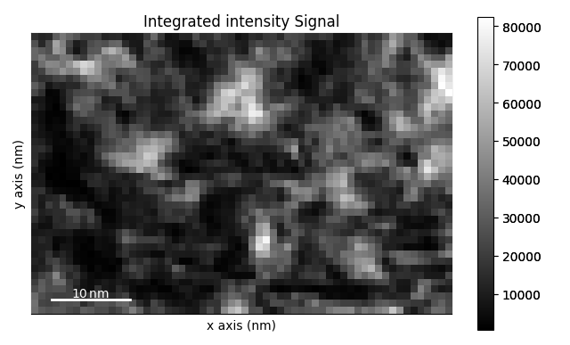
Centring the Direct Beam#
Strain mapping is extremely sensitive to the position of the beam centre. Even a fraction-of-a-pixel error in the centre translates directly into a spurious rigid-body shift in the extracted strain field.
calibration.center = None fits the centre automatically from the
brightest point in each diffraction pattern. After centering, the axes
offsets are updated so that (kx=0, ky=0) coincides with the direct beam.
s.calibration.center = None
Look at a single representative diffraction pattern to check the centering and to choose template-matching parameters.
s.inav[20, 10].plot(vmax="99th")
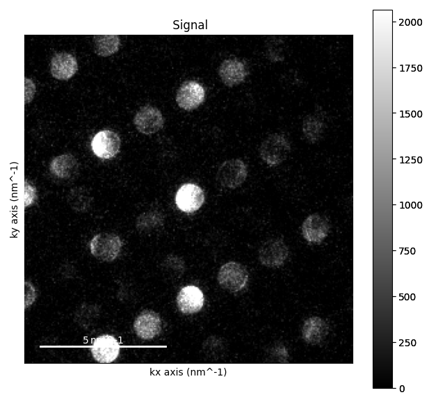
Disk Detection via Template Matching#
We detect diffraction disks using a cross-correlation with a synthetic disk template of radius equal to the measured disk size.
template_match_disk(disk_r=...) convolves each pattern with a filled
circular disk and normalises the result to [0, 1]. The output is a
correlation map where peaks indicate disk centres.
disk_r should match the actual diffraction disk radius in pixels.
At 256 × 256 pixels and 0.051 nm⁻¹/pixel, a disk of radius ~5 pixels is
typical for this dataset. You can estimate this visually from a single
pattern or by inspecting the radial profile.
subtract_min=False keeps the baseline at zero, which avoids artefacts
when the background is non-uniform.
template_matched = s.template_match_disk(disk_r=5, subtract_min=False)
template_matched.plot(vmin=0.3, vmax=1.0)
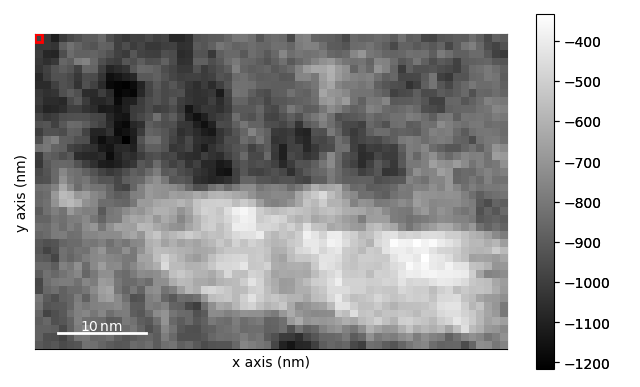
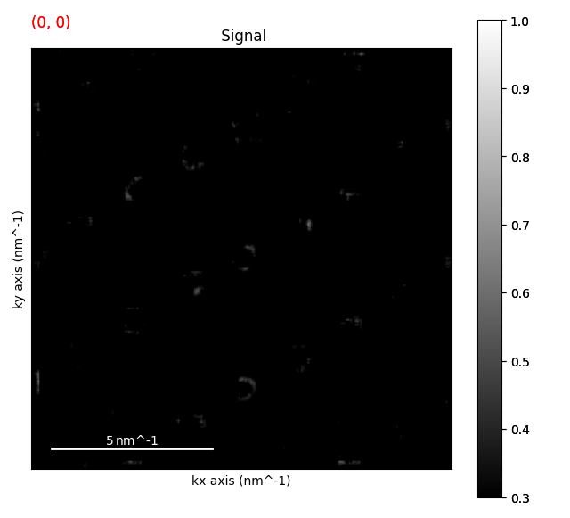
0%| | 0/17 [00:00<?, ?it/s]
6%|▌ | 1/17 [00:02<00:44, 2.78s/it]
53%|█████▎ | 9/17 [00:05<00:04, 1.83it/s]
100%|██████████| 17/17 [00:05<00:00, 4.06it/s]
100%|██████████| 17/17 [00:05<00:00, 2.97it/s]
Choosing the Detection Threshold#
The threshold_abs parameter to get_diffraction_vectors sets the
minimum normalised correlation score that counts as a detected disk.
A good strategy is to plot a histogram of the correlation values to find a clear gap between the background distribution and the disk peaks. Setting the threshold in this gap minimises both false negatives (missed disks) and false positives (noise peaks).
# Use the mean pattern for a quick look at the score distribution.
corr_mean = template_matched.mean()
fig, ax = plt.subplots()
ax.hist(corr_mean.data.ravel(), bins=100, log=True)
ax.axvline(0.35, color="red", linestyle="--", label="threshold = 0.35")
ax.set_xlabel("Normalised correlation score")
ax.set_ylabel("Count (log scale)")
ax.set_title("Disk-detection threshold selection")
ax.legend()
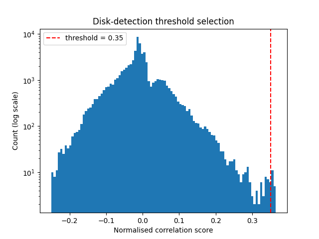
<matplotlib.legend.Legend object at 0x7f8518975a30>
Extracting Diffraction Vectors#
get_diffraction_vectors finds local maxima in the correlation map that
exceed the threshold and are at least min_distance pixels apart
(to prevent detecting the same disk twice).
The result is a DiffractionVectors signal — a ragged array where each
navigation pixel stores a list of detected spot positions in calibrated
reciprocal-space units (nm⁻¹ here).
diffraction_vectors = template_matched.get_diffraction_vectors(
threshold_abs=0.35,
min_distance=5,
)
# Overlay the detected vectors on the experimental signal as a quick check.
markers = diffraction_vectors.to_markers(color="cyan", sizes=8, alpha=0.7)
s.plot()
s.add_marker(markers)
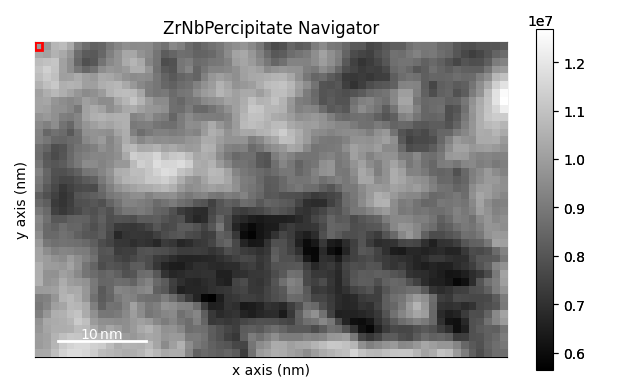
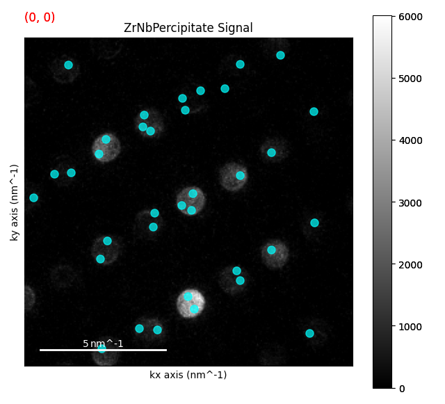
0%| | 0/17 [00:00<?, ?it/s]
6%|▌ | 1/17 [00:02<00:32, 2.01s/it]
53%|█████▎ | 9/17 [00:04<00:03, 2.33it/s]
100%|██████████| 17/17 [00:04<00:00, 3.85it/s]
0%| | 0/49 [00:00<?, ?it/s]
100%|██████████| 49/49 [00:00<00:00, 2920.82it/s]
0%| | 0/49 [00:00<?, ?it/s]
100%|██████████| 49/49 [00:00<00:00, 4398.14it/s]
Selecting the First-Order Reflections#
For strain mapping we only want the first-order reflections closest to the direct beam — these have the largest signal-to-noise and the simplest relationship to the lattice parameters.
filter_magnitude keeps only vectors whose |g| falls in [min, max] in
calibrated units. We exclude the direct beam (|g| ≈ 0) and keep only the
first ring of spots.
Inspect the vector magnitude distribution first to choose sensible limits.
# Plot a histogram of |g| values in a representative pattern.
all_mags = []
vdata = diffraction_vectors.data # ragged object array, each element is (n, ≥2)
for row in vdata.ravel():
if row is not None and len(row) > 0:
mags = np.linalg.norm(row[:, :2], axis=-1) # use kx, ky columns only
all_mags.extend(mags.tolist())
fig, ax = plt.subplots()
ax.hist(all_mags, bins=80)
ax.set_xlabel("|g| (nm⁻¹)")
ax.set_ylabel("Count")
ax.set_title("Distribution of diffraction vector magnitudes")
ax.axvline(0.5, color="red", linestyle="--", label="min = 0.5 nm⁻¹")
ax.axvline(5.0, color="orange", linestyle="--", label="max = 5.0 nm⁻¹")
ax.legend()
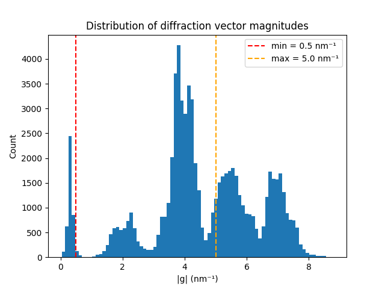
<matplotlib.legend.Legend object at 0x7f853d6f88c0>
first_ring = diffraction_vectors.filter_magnitude(
min_magnitude=0.5,
max_magnitude=5.0,
)
0%| | 0/49 [00:00<?, ?it/s]
90%|████████▉ | 44/49 [00:00<00:00, 434.29it/s]
100%|██████████| 49/49 [00:00<00:00, 480.35it/s]
Choosing a Reference Region#
The displacement gradient tensor F is computed relative to a reference set of vectors. The reference should come from a scan position that is:
Unstrained — away from the precipitate, in the matrix far from the interface.
Single-crystal — ideally one grain with clean, well-defined spots.
On-zone — the pattern should show clear Bragg spots at the expected positions for the matrix structure.
Here we pick a position near the top-left corner of the scan (matrix region). Use the virtual bright-field image above to identify a suitable reference.
first_ring.inav[col, row] follows HyperSpy display order (col, row).
# Choose a reference in the matrix far from the precipitate.
# Inspect the VBF to confirm this is in the unstrained matrix region.
# ``inav[col, row]`` follows HyperSpy display order (col, row).
#
# For ragged DiffractionVectors the single-position data is a 1-element
# object array; use ``.data[0]`` (not ``[()]``) to get the inner 2D array.
ref_col, ref_row = 5, 5
unstrained_vectors = first_ring.inav[ref_col, ref_row].data[0]
print(f"Reference vectors at scan position ({ref_col}, {ref_row}):")
print(f" {len(unstrained_vectors)} vectors, shape: {unstrained_vectors.shape}")
print(unstrained_vectors[:, :2]) # show kx, ky columns only
Reference vectors at scan position (5, 5):
17 vectors, shape: (17, 3)
[[-1.1025641 -4.64102564]
[ 2.28205128 -3.41025641]
[ 1.76923077 -3.25641026]
[-2.17948718 -2.94871795]
[ 3.66666667 -2.58974359]
[-3.05128205 -2.02564103]
[ 0.79487179 -1.92307692]
[-3.1025641 -1.25641026]
[ 4.12820513 -0.28205128]
[ 4.38461538 0.07692308]
[ 4.07692308 0.38461538]
[-4.58974359 0.43589744]
[-1.1025641 1.30769231]
[ 3. 2.07692308]
[ 1.76923077 3.46153846]
[-1.87179487 3.56410256]
[ 1.15384615 4.79487179]]
Computing the Strain Maps#
get_strain_maps solves a least-squares problem at each pixel relating
the measured vectors to the reference, then decomposes the displacement
gradient tensor F = RU (polar decomposition) into:
R: rotation matrix (rigid-body rotation)
U: right stretch tensor (symmetric, captures pure strain)
The returned StrainMap stores four 2D images stacked along its navigation
axis: e11 (εxx), e22 (εyy), e12 (εxy), and θ (rotation angle).
return_residuals=False skips saving the per-pixel fitting residuals.
strain_maps = first_ring.get_strain_maps(
unstrained_vectors=unstrained_vectors,
return_residuals=False,
)
print(strain_maps)
0%| | 0/49 [00:00<?, ?it/s]
27%|██▋ | 13/49 [00:00<00:00, 124.95it/s]
59%|█████▉ | 29/49 [00:00<00:00, 144.66it/s]
100%|██████████| 49/49 [00:00<00:00, 165.32it/s]
0%| | 0/49 [00:00<?, ?it/s]
37%|███▋ | 18/49 [00:00<00:00, 173.51it/s]
82%|████████▏ | 40/49 [00:00<00:00, 198.43it/s]
100%|██████████| 49/49 [00:00<00:00, 208.88it/s]
0%| | 0/49 [00:00<?, ?it/s]
63%|██████▎ | 31/49 [00:00<00:00, 294.30it/s]
100%|██████████| 49/49 [00:00<00:00, 347.53it/s]
0%| | 0/49 [00:00<?, ?it/s]
100%|██████████| 49/49 [00:00<00:00, 4691.19it/s]
0%| | 0/9 [00:00<?, ?it/s]
100%|██████████| 9/9 [00:00<00:00, 8699.87it/s]
<StrainMap, title: , dimensions: (4|60, 40)>
Visualising the Strain Components#
plot() navigates through the four components. Each component is a 2D
image of the scan area. Use the HyperSpy navigator or the inav accessor
to step between components.
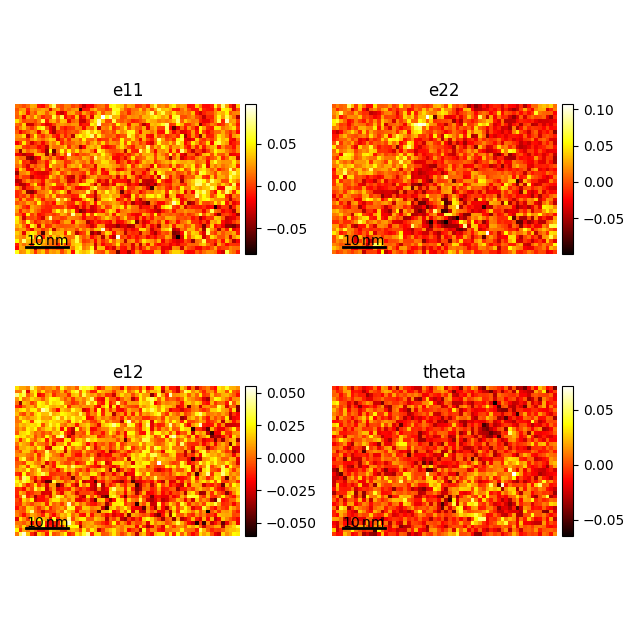
[<Axes: title={'center': 'e11'}, xlabel='x axis (nm)', ylabel='y axis (nm)'>, <Axes: title={'center': 'e22'}, xlabel='x axis (nm)', ylabel='y axis (nm)'>, <Axes: title={'center': 'e12'}, xlabel='x axis (nm)', ylabel='y axis (nm)'>, <Axes: title={'center': 'theta'}, xlabel='x axis (nm)', ylabel='y axis (nm)'>]
Extract each component as a 2D numpy array for custom matplotlib plots.
The navigation axis stores the four components in order: e11, e22, e12, θ.
inav[i] selects the i-th component as a 2D image signal;
.data gives the underlying numpy array.
eps_xx = strain_maps.inav[0].data # εxx — normal strain along x
eps_yy = strain_maps.inav[1].data # εyy — normal strain along y
eps_xy = strain_maps.inav[2].data # εxy — shear strain
theta = strain_maps.inav[3].data # θ — rigid-body rotation (rad)
Plot the three strain components side by side. The colour scale is symmetric around zero: blue = compression, red = tension.
fig, axs = plt.subplots(1, 3, figsize=(14, 4))
clim = 0.02 # ± 2 % strain range
titles = [
r"$\varepsilon_{xx}$ (x-normal strain)",
r"$\varepsilon_{yy}$ (y-normal strain)",
r"$\varepsilon_{xy}$ (shear strain)",
]
for ax, comp, title in zip(axs, [eps_xx, eps_yy, eps_xy], titles):
im = ax.imshow(comp, cmap="RdBu_r", vmin=-clim, vmax=clim, origin="upper")
ax.set_title(title)
ax.axis("off")
fig.colorbar(im, ax=ax, fraction=0.046, pad=0.04, label="strain")
plt.tight_layout()
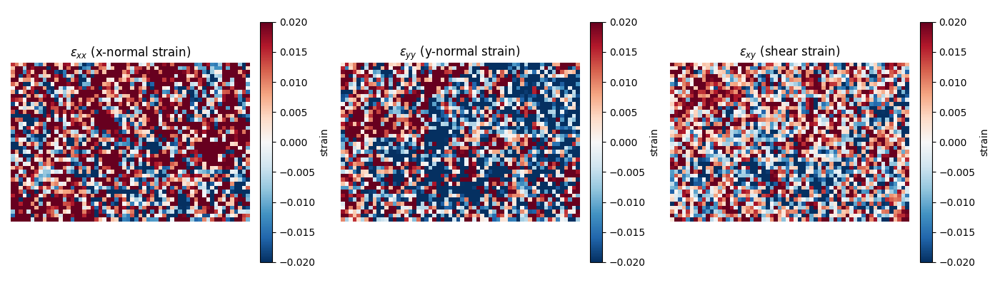
Rigid-Body Rotation Map#
The antisymmetric rotation θ captures rigid-body rotation of the lattice relative to the reference. In a single-crystal specimen near a precipitate, this maps bending of the matrix; in a polycrystalline sample it highlights grain boundaries.
fig, ax = plt.subplots(figsize=(5, 4))
im = ax.imshow(theta, cmap="PiYG", vmin=-0.02, vmax=0.02, origin="upper")
ax.set_title("Rigid-body rotation θ (rad)")
ax.axis("off")
fig.colorbar(im, ax=ax, fraction=0.046, pad=0.04, label="rotation (rad)")
plt.tight_layout()
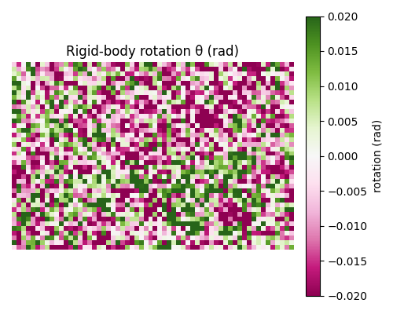
Interpreting the Results#
In this ZrNb dataset the precipitate has a slightly different lattice parameter from the Zr matrix. At the precipitate–matrix interface the crystal must accommodate this mismatch, generating a localised strain field.
Expected signatures:
εxx / εyy: positive (tensile) on one side of the interface, negative (compressive) on the other — forming a “butterfly” pattern around the precipitate.
εxy: shear strain concentrated at the interface corners.
θ: small rotation of the matrix lattice near the interface as it bends to accommodate the mismatch.
The magnitude of the strain gives an estimate of the lattice mismatch f:
f = (a_precipitate - a_matrix) / a_matrix
For ZrNb alloys f is typically 1–3 % depending on Nb content.
# Summarise the strain statistics in the map.
print("Strain statistics:")
for name, comp in [("εxx", eps_xx), ("εyy", eps_yy), ("εxy", eps_xy)]:
print(
f" {name}: mean = {np.nanmean(comp)*100:.2f}%, "
f"std = {np.nanstd(comp)*100:.2f}%, "
f"range = [{np.nanmin(comp)*100:.2f}%, {np.nanmax(comp)*100:.2f}%]"
)
Strain statistics:
εxx: mean = 1.14%, std = 2.49%, range = [-8.08%, 9.67%]
εyy: mean = -0.29%, std = 2.78%, range = [-9.94%, 10.70%]
εxy: mean = 0.21%, std = 1.72%, range = [-6.02%, 5.53%]
Practical Tips#
Detector resolution: more pixels = more accurate peak positions = lower strain noise. 512 × 512 or larger is preferred for quantitative work.
Disk radius: disk_r should closely match the actual disk size.
Too small → noisy peaks; too large → merged peaks in dense patterns.
Reference selection: always verify the reference by overlaying its vectors on the pattern. A poor reference introduces a systematic offset into every strain measurement.
Precession: adding beam precession averages over the Ewald sphere tilt and reduces dynamical diffraction effects, improving accuracy. The strain mapping workflow is identical with precession data.
Multiple reference spots: using more spots (larger max_magnitude)
overdetermines the system and reduces the effect of individual noisy peaks.
However, at high |g| the disks may be weaker and the positions noisier.
sphinx_gallery_thumbnail_number = 6
Total running time of the script: (0 minutes 42.949 seconds)